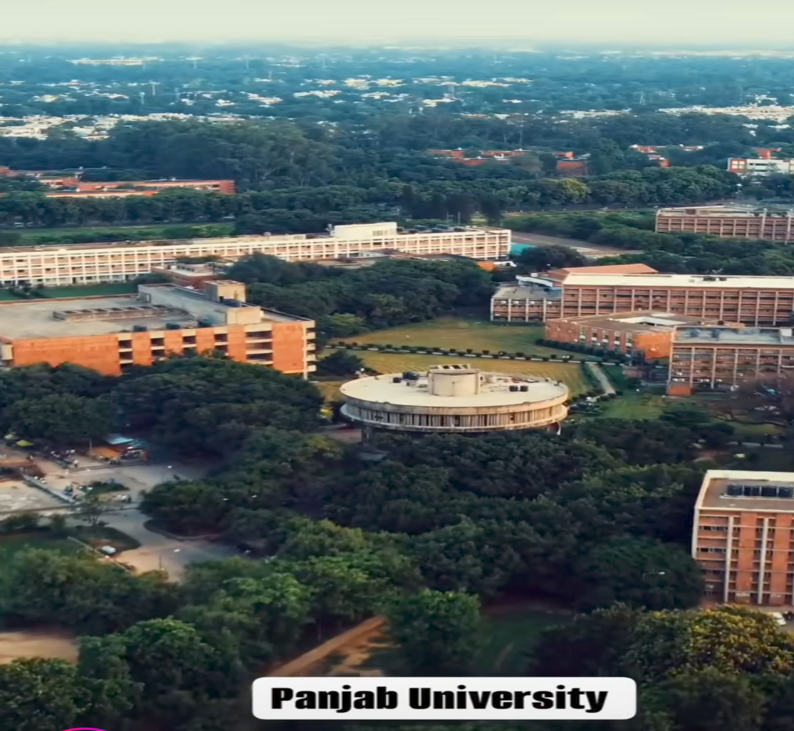

The Future of Education is here
In this world of 7 billion people we need to Educate all of them. This is Future of an educated world and we are proud to say that Future of Education is here.
ABOUT US
At MATHWAY, we recognize the difficulties Mathematics students encounter in finding reliable study resources. Our platform is committed to offering free, convenient access to lectures, notes, and previous year question papers (PYQ) tailored specifically for Mathematics students at Mathematics Department Chandigarh, Panjab University. We aim to support their academic journey by providing quality content that simplifies learning and exam preparation. With MATHWAY, students can focus on their studies without worrying about access to essential materials.
The Student Centre
The Student Centre at Panjab University (PU) in Chandigarh, India is a hub of student activities and social life on campus. The center includes: A coffee house, A recreation room, Offices for the students' council and the dean-students' welfare, and A few eateries. History The Student Centre is considered the epicenter of campus life at PU. Coffee house The South India Coffee House was opened in 1975 and closed in June 2019 due to a decline in footfall. Future A new Student Centre is being planned for the south campus to ease the rush at the main campus.
The Gandhi Bhawan
The Gandhi Bhawan at Panjab University in Chandigarh, India has a rich history that includes its design, inauguration, and cultural significance: Design The Swiss-born French architect Pierre Jeanneret designed the building in 1962. Jeanneret's principles of Indian modernism were influenced by Gandhian ideals and the pinwheel toys of local children. Inauguration The building is a Grade I Heritage building in the Chandigarh Master Plan. It's considered the "geographic and symbolic center of Panjab University's cultural core". Historical moments The building is associated with several key historic moments in India's post-independence history. Technological advancements In 2015, Panjab University applied for a grant to prepare a conservation management plan for the building.
The A. C. Joshi Library
The A. C. Joshi Library at Panjab University in Chandigarh, India has a rich history, including its founding, design, and notable features: Founding The library was established in 1947 in the U.S. Club in Shimla after the Partition of India. Design The library offers access to over 7,500 online journals, and has a Radio Frequency Identification (RFID) system for self-issue and returns of books. It also provides JAWS software for visually impaired students, and Zoom-Ex to turn a computer into a scanner and magnifier. Collections The library's collections are invaluable for research scholars and policy framers. Scholars from Europe, the US, and Arab countries visit the library annually for research. Accessibility The library has a wheelchair accessible entrance and parking lot.
The Administrative Block
Here's some information about the administrative block at Panjab University: Location The administrative office for Panjab University was in Solan before the university moved to its current campus in Chandigarh in 1956. Fire In May 2017, a fire destroyed records, computers, furniture, and other equipment in the administrative block. The fire was brought under control after more than three hours, with the help of eight fire tenders. The cause of the fire is thought to have been a short circuit, loose wires, or non-functional fire alarms.